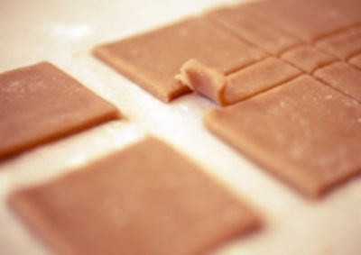

Погодьтеся, що майже всім подобаються крекери. Ці хрусткі печенюшки бувають різними і солоними, солодкими. А ви ніколи не замислювалися над тим, що цілком реально приготувати їх самим і вони за смаком і «хрускоту» нічим не будуть відрізнятися від магазинних. Домашні крекери Грем, ось назва страви, яку ми з вами зараз і приготуємо, точніше сказати випечемо. І ось що нам знадобиться.
Замісити тісто.
В окремий посуд зсипаємо борошно, додаємо коричневий цукор, соду і сіль. Вершкове масло в окремому посуді розм'якшуємо (не розтоплюємо повністю) і кладемо в посуд з борошном. Туди кладемо мед, молоко, ваніль. Ретельно це все перемішуємо і ставимо посуд з тестом на маленький вогонь. Заважаємо вміст до тих пір, поки тісто не «збереться».
Робимо крекери.
Ножем відрізаємо від тесту невеликі шматочки і розкочуємо качалкою до товщини 5-10 мм. Знову ж ножем розмічаємо майбутні печенюшки. Найкраще це робити за допомогою лінійки, яку перед використанням потрібно обсипати борошном, щоб тісто до неї не приклала. Таким чином розкачуємо все тісто.
Випікаємо крекери.
Акуратно вирізаємо крекери, робимо зубочисткою візерунки-проколи і викладаємо на змащене олією деко. Ставимо деко в розігріту до 200 градусів духовку і випікаємо хвилин 7-10.
Подаємо до столу.
Готові крекери Грем посипаємо корицею з цукром і подаємо до столу.Приємного апетиту!